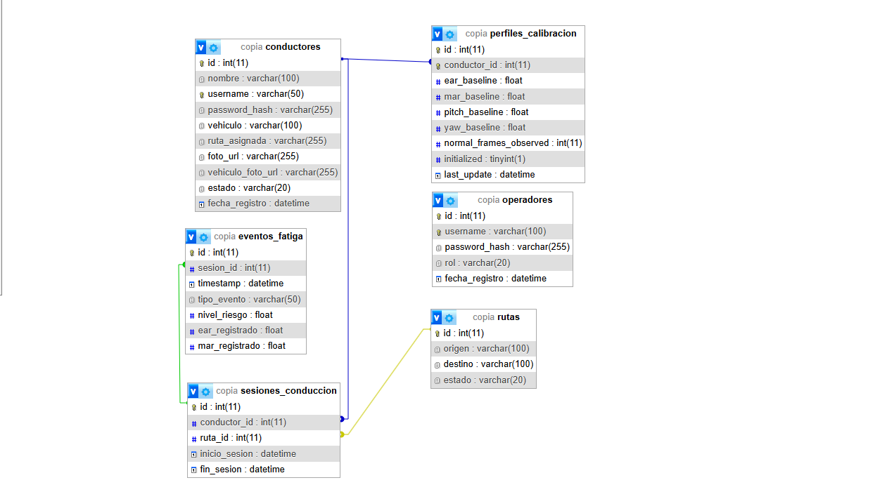
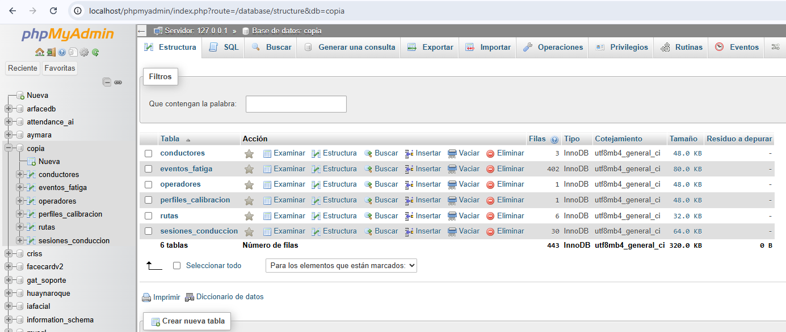
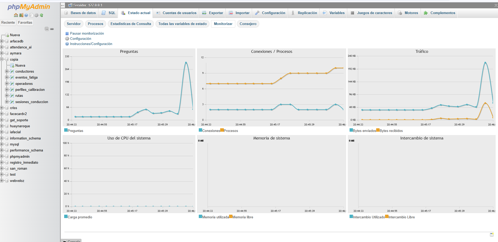
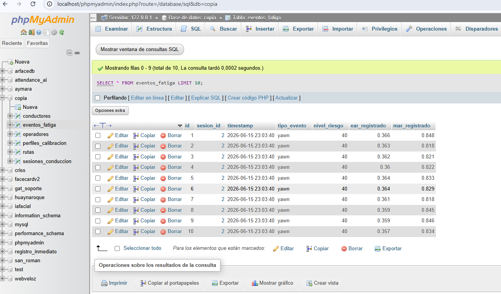
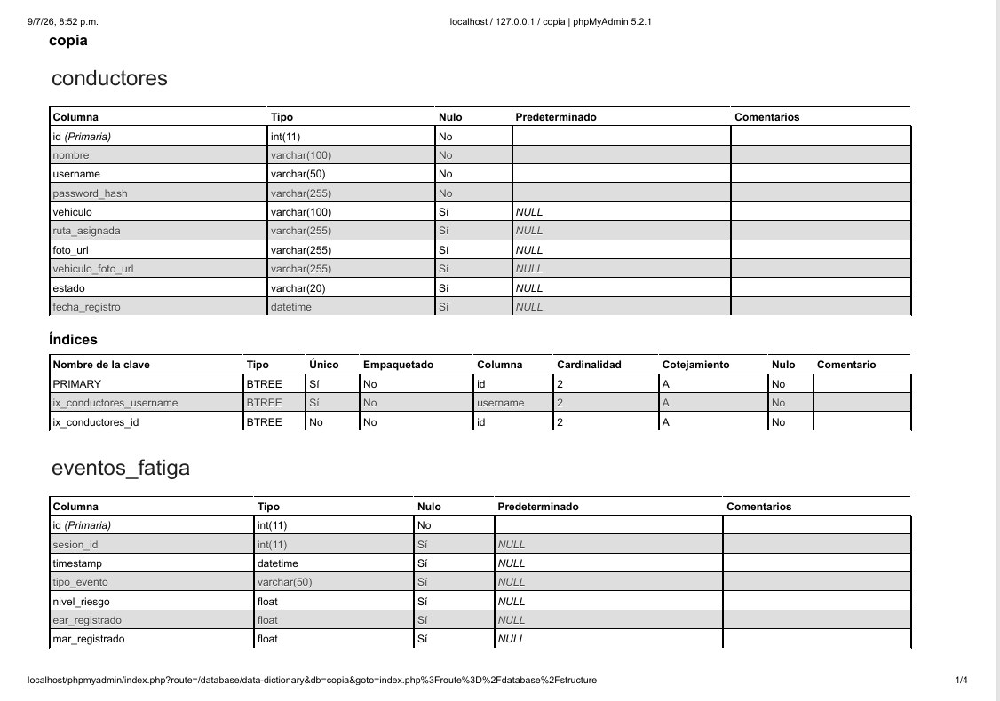
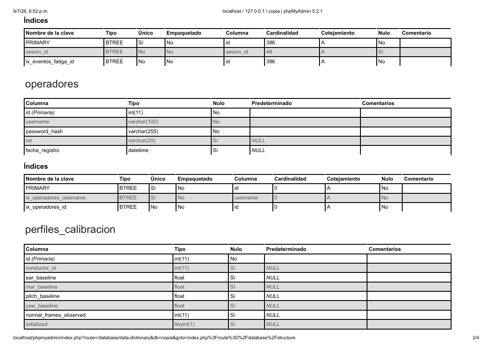
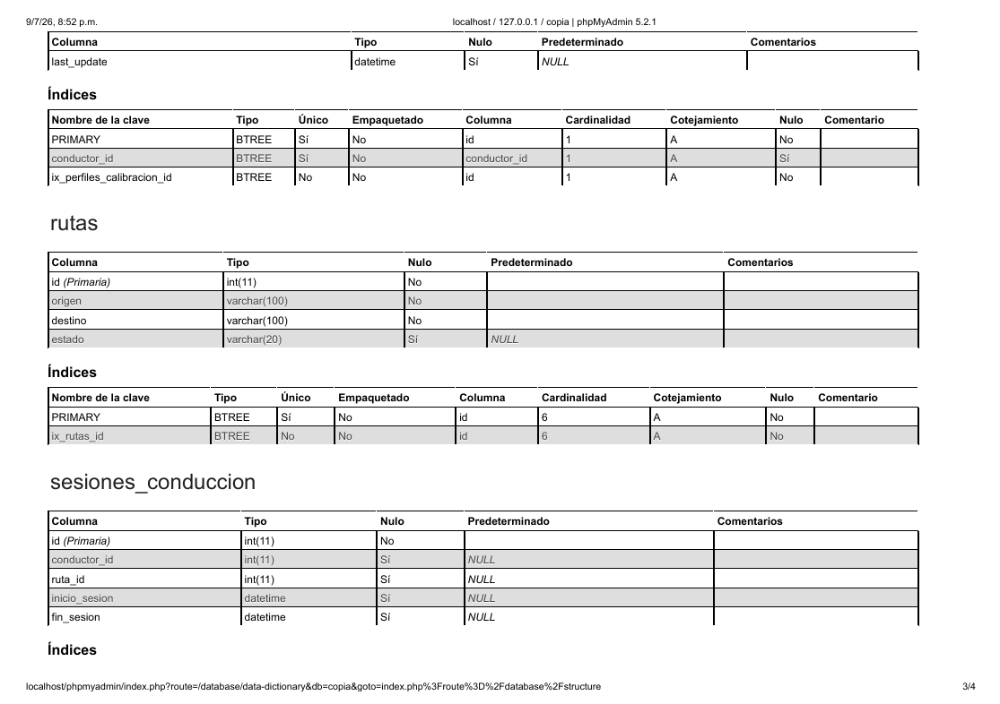
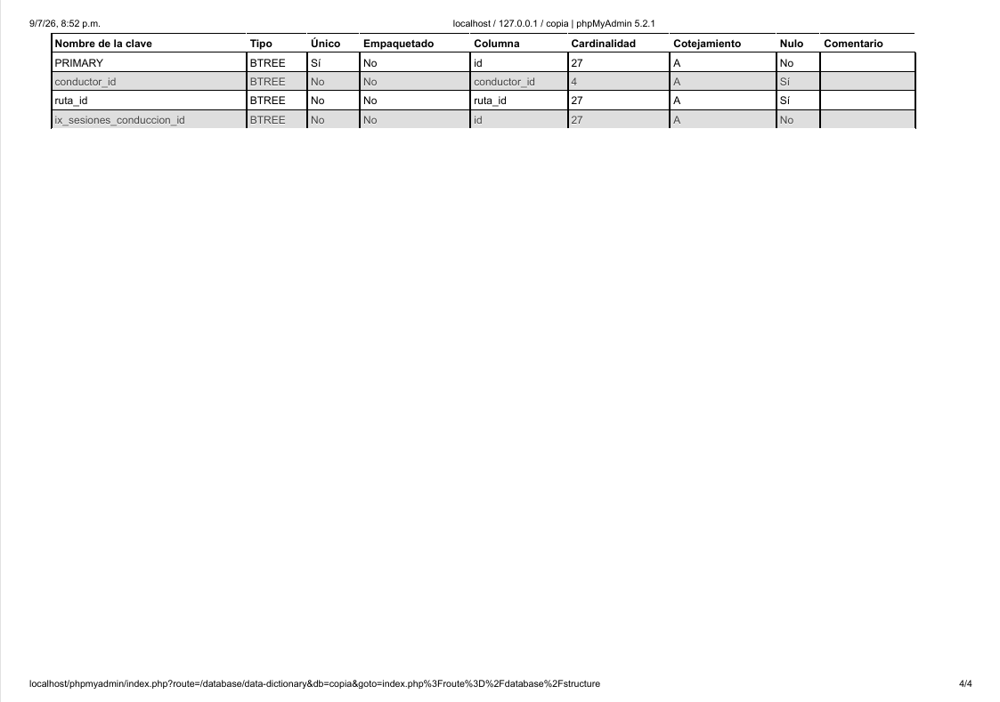

Entregable 2: Plataforma de Datos del Sistema
Portada
- Título del sistema: CopAI - Asistente de Conducción AI (Edge & Central Server)
- Nombre del estudiante: Cristhian Edy Llanque Tipo - Christian Wilbert Salas Yupanqui - Frank Diego Choquehuanca
- Semestre: X
- Fecha: Julio 2026
Resumen Ejecutivo
El presente documento detalla la arquitectura, modelado y administración de la Plataforma de Datos del sistema CopAI. La persistencia de la información es el pilar que permite la toma de decisiones preventivas en la gestión de flotas. Para ello, se ha implementado una base de datos relacional en MySQL que actúa como el Core Data Warehouse en el Servidor Central. Este esquema garantiza la integridad referencial (ACID) entre las entidades de Conductores, Sesiones de Conducción, Perfiles de Calibración, Rutas, Operadores y Eventos de Fatiga.
Se exponen los Modelos Entidad-Relación, scripts de definición (DDL), y manipulación de datos (DML). Además, para garantizar el rendimiento (CE022), se han programado Triggers para el análisis automático de riesgos a nivel base de datos, Procedimientos Almacenados (Stored Procedures) para la ingesta masiva de métricas biométricas (EAR, MAR, Pitch, Yaw) capturadas por MediaPipe, y esquemas de seguridad basados en Roles para auditoría estricta.
Sección 1: Modelo de Datos
1.1 Modelo Lógico (Entidad-Relación)
El sistema está diseñado y normalizado para mantener una estricta trazabilidad de los eventos por sesión de conducción.
Entidades Principales: - conductores: Almacena la identidad, credenciales y metadatos de los conductores. - perfiles_calibracion: Guarda las líneas base (baselines) biométricas personalizadas de cada conductor (EAR, MAR, Pitch, Yaw) para adaptar el algoritmo IA a sus facciones. - sesiones_conduccion: Registra el inicio y fin del viaje de un conductor asignado a una ruta. - eventos_fatiga: Registra de forma precisa cada incidente detectado durante una sesión activa. - rutas: Catálogo logístico de orígenes y destinos. - operadores: Administradores del Dashboard Web con control de acceso por roles.

1.2 Diccionario de Datos
Tabla: conductores
| Campo | Tipo de Dato | Restricciones | Descripción |
|---|---|---|---|
| id | INT(11) | PK, AUTO_INC | Identificador único del conductor. |
| nombre | VARCHAR(100) | NOT NULL | Nombre completo. |
| username | VARCHAR(50) | UNIQUE | Usuario para el Login Edge. |
| password_hash | VARCHAR(255) | NOT NULL | Contraseña encriptada. |
| vehiculo | VARCHAR(100) | - | Vehículo asignado por defecto. |
| ruta_asignada | VARCHAR(255) | - | Ruta estática asignada (Opcional). |
| foto_url | VARCHAR(255) | - | Ruta de la foto del conductor. |
| vehiculo_foto_url | VARCHAR(255) | - | Ruta de la foto del vehículo. |
| estado | VARCHAR(20) | - | Estado (Ej: Activo, Inactivo). |
| fecha_registro | DATETIME | DEFAULT NOW | Fecha de creación del registro. |
Tabla: eventos_fatiga
| Campo | Tipo de Dato | Restricciones | Descripción |
|---|---|---|---|
| id | INT(11) | PK, AUTO_INC | ID único de la alerta. |
| sesion_id | INT(11) | FK (sesiones_conduccion) | Sesión en la que ocurrió la alerta. |
| timestamp | DATETIME | NOT NULL | Momento exacto del micro-sueño/distracción. |
| tipo_evento | VARCHAR(50) | NOT NULL | Ej: "Ojos Cerrados", "Bostezo". |
| nivel_riesgo | FLOAT | NOT NULL | Valor ponderado de la gravedad (0.0 - 1.0). |
| ear_registrado | FLOAT | NOT NULL | Eye Aspect Ratio capturado al momento. |
| mar_registrado | FLOAT | NOT NULL | Mouth Aspect Ratio (Bostezos). |
Sección 2: Implementación de Base de Datos
2.1 Scripts de Definición de Datos (DDL)
A continuación, el script DDL exacto que genera la base de datos implementada, con sus respectivas Foreign Keys:
CREATE DATABASE IF NOT EXISTS copia CHARACTER SET utf8mb4 COLLATE utf8mb4_unicode_ci;
USE copia;
CREATE TABLE operadores (
id INT(11) AUTO_INCREMENT PRIMARY KEY,
username VARCHAR(100) NOT NULL UNIQUE,
password_hash VARCHAR(255) NOT NULL,
rol VARCHAR(20) NOT NULL,
fecha_registro DATETIME DEFAULT CURRENT_TIMESTAMP
);
CREATE TABLE rutas (
id INT(11) AUTO_INCREMENT PRIMARY KEY,
origen VARCHAR(100) NOT NULL,
destino VARCHAR(100) NOT NULL,
estado VARCHAR(20) DEFAULT 'Activa'
);
CREATE TABLE conductores (
id INT(11) AUTO_INCREMENT PRIMARY KEY,
nombre VARCHAR(100) NOT NULL,
username VARCHAR(50) NOT NULL UNIQUE,
password_hash VARCHAR(255) NOT NULL,
vehiculo VARCHAR(100),
ruta_asignada VARCHAR(255),
foto_url VARCHAR(255),
vehiculo_foto_url VARCHAR(255),
estado VARCHAR(20) DEFAULT 'Activo',
fecha_registro DATETIME DEFAULT CURRENT_TIMESTAMP
);
CREATE TABLE perfiles_calibracion (
id INT(11) AUTO_INCREMENT PRIMARY KEY,
conductor_id INT(11) NOT NULL,
ear_baseline FLOAT NOT NULL,
mar_baseline FLOAT NOT NULL,
pitch_baseline FLOAT NOT NULL,
yaw_baseline FLOAT NOT NULL,
normal_frames_observed INT(11) DEFAULT 0,
initialized TINYINT(1) DEFAULT 0,
last_update DATETIME DEFAULT CURRENT_TIMESTAMP ON UPDATE CURRENT_TIMESTAMP,
FOREIGN KEY (conductor_id) REFERENCES conductores(id) ON DELETE CASCADE
);
CREATE TABLE sesiones_conduccion (
id INT(11) AUTO_INCREMENT PRIMARY KEY,
conductor_id INT(11) NOT NULL,
ruta_id INT(11),
inicio_sesion DATETIME NOT NULL,
fin_sesion DATETIME,
FOREIGN KEY (conductor_id) REFERENCES conductores(id) ON DELETE CASCADE,
FOREIGN KEY (ruta_id) REFERENCES rutas(id) ON DELETE SET NULL
);
CREATE TABLE eventos_fatiga (
id INT(11) AUTO_INCREMENT PRIMARY KEY,
sesion_id INT(11) NOT NULL,
timestamp DATETIME NOT NULL,
tipo_evento VARCHAR(50) NOT NULL,
nivel_riesgo FLOAT NOT NULL,
ear_registrado FLOAT NOT NULL,
mar_registrado FLOAT NOT NULL,
FOREIGN KEY (sesion_id) REFERENCES sesiones_conduccion(id) ON DELETE CASCADE
);
2.2 Evidencia de Implementación

Sección 3: Consultas y Programación en Base de Datos
3.1 Consultas SQL Relevantes (DML)
Esta consulta es utilizada por el Dashboard Web para calcular qué conductores tienen mayor índice de eventos críticos:
Ranking de Conductores con Mayor Riesgo (Cruza 3 tablas):
SELECT c.nombre, COUNT(e.id) as total_alertas, AVG(e.nivel_riesgo) as riesgo_promedio
FROM conductores c
JOIN sesiones_conduccion s ON c.id = s.conductor_id
JOIN eventos_fatiga e ON s.id = e.sesion_id
WHERE e.timestamp >= DATE_SUB(NOW(), INTERVAL 7 DAY)
GROUP BY c.id
ORDER BY total_alertas DESC
LIMIT 5;
3.2 Procedimientos Almacenados (Stored Procedures)
Garantizan transacciones ACID seguras. Este SP crea una nueva sesión de conducción asegurándose de que el conductor existe y está activo:
DELIMITER //
CREATE PROCEDURE sp_iniciar_sesion(
IN p_username VARCHAR(50),
IN p_ruta_id INT,
OUT p_sesion_id INT
)
BEGIN
DECLARE v_conductor_id INT;
DECLARE v_estado VARCHAR(20);
SELECT id, estado INTO v_conductor_id, v_estado
FROM conductores WHERE username = p_username;
IF v_conductor_id IS NOT NULL AND v_estado = 'Activo' THEN
INSERT INTO sesiones_conduccion (conductor_id, ruta_id, inicio_sesion)
VALUES (v_conductor_id, p_ruta_id, NOW());
SET p_sesion_id = LAST_INSERT_ID();
ELSE
SIGNAL SQLSTATE '45000' SET MESSAGE_TEXT = 'Conductor inválido o inactivo';
END IF;
END //
DELIMITER ;
3.3 Disparadores (Triggers)
Automatizan reglas de negocio. Si un conductor registra un evento con un nivel_riesgo mayor a 0.90 (Peligro Inminente), el trigger inserta un flag urgente para el operador.
DELIMITER //
CREATE TRIGGER trg_riesgo_critico
AFTER INSERT ON eventos_fatiga
FOR EACH ROW
BEGIN
IF NEW.nivel_riesgo >= 0.90 THEN
-- Simulando registro en una tabla temporal de auditoría o actualizando el estado de la sesión
UPDATE sesiones_conduccion
SET fin_sesion = NOW() -- Fuerza el cierre de sesión de forma lógica por seguridad
WHERE id = NEW.sesion_id;
END IF;
END //
DELIMITER ;
Sección 4: Seguridad y Administración
4.1 Usuarios y Roles de Base de Datos
La seguridad aplica el principio de menor privilegio (Least Privilege). La aplicación FastAPI no se conecta como ROOT.
CREATE USER 'copia_api'@'localhost' IDENTIFIED BY 'FastAPI_Secret2026';
GRANT SELECT, INSERT, UPDATE ON copia.* TO 'copia_api'@'localhost';
-- Se bloquea el derecho de borrar tablas o registros históricos por seguridad vial
REVOKE DELETE, DROP ON copia.* FROM 'copia_api'@'localhost';
FLUSH PRIVILEGES;
4.2 Estrategias de Respaldo y Recuperación
El sistema cuenta con un archivo .bat (implementado en iniciar_servidores.bat) que puede incluir comandos de volcado lógico (mysqldump) para respaldos diarios automáticos:
Comando de Respaldo (Backup):
mysqldump -u root -p copia > "C:\CopIA_Backups\copia_db_backup_%date:~-4,4%%date:~-10,2%%date:~-7,2%.sql"
4.3 Evidencias de Monitoreo

Anexos
5.1 Capturas de Ejecución de Procedimientos

5.2 Diccionario de Datos Completo
Se anexa el reporte detallado exportado desde phpMyAdmin.



